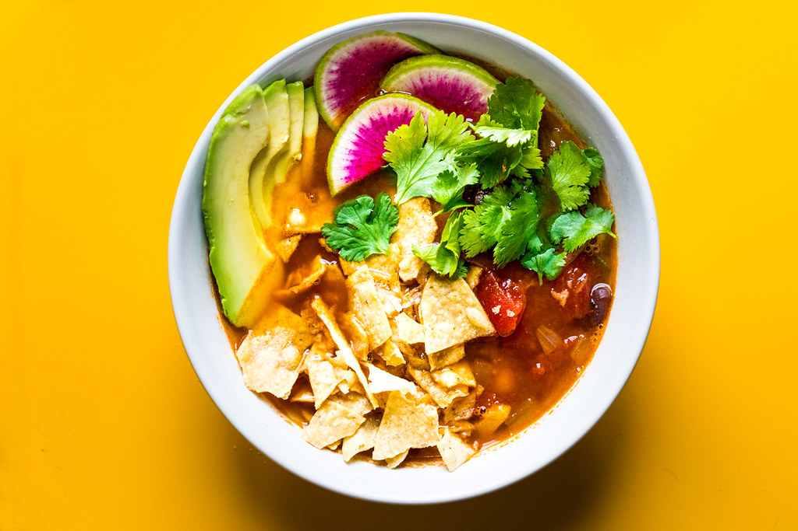

Taco Soup

Description:
This easy 30 minute recipe will inevitably grant you with the mexican recipe to end all mexican cuisine: taco soup. Not only will this taco soup prove to be delicious and worthwhile, it will also be relatively nutrious, as it is packed full of protein as well as vegetables, which you typically aren't eating as much of as you should. Without further ado, let's commence the recipe!
Ingredients:
- Store Bought Taco Seasoning
- Ground Beef
- Onion
- Bell Pepper
- Garlic
- Beans
- Corn
- Tomatoes
- Beef Broth
(Optional) Toppings:
- Crushed Tortilla Chips
- A spoonful of sour cream
- A diced avocado or guacamole
Shredded Cheese
- Fresh cilantro or green onions
- Lime wedges
Steps:
- Chop up the onion, and cube the pepper and tomatoes.
- Heat oil in a Dutch oven and saute the ground beef. Then, add a touch of taco seasoning to the beef.
- Add the vegetables, remaining ingredients, and seasoning to the cooked ground beef. Simmer on low for 12-15 minutes, and then serve whilst it's still hot.
- (Optional) Add any desired toppings onto the soup.